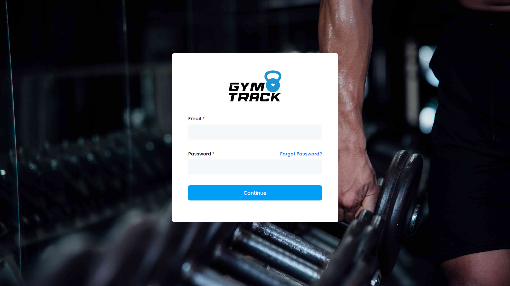
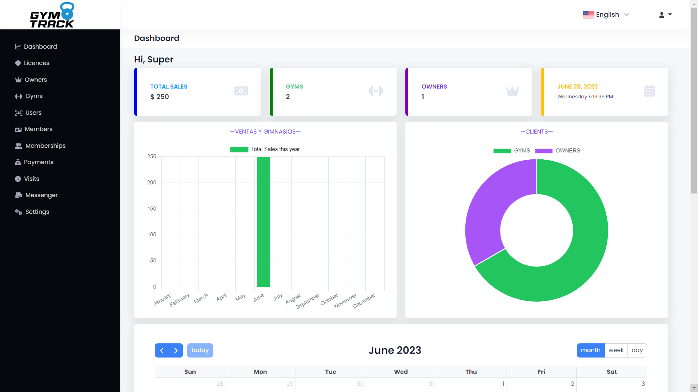
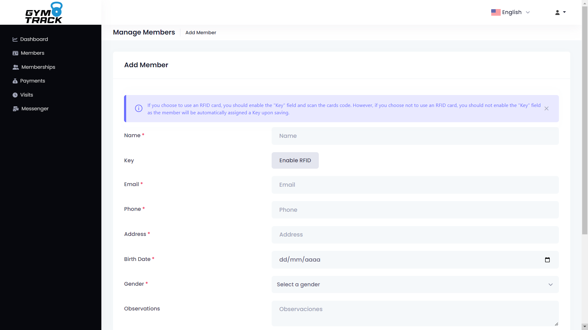
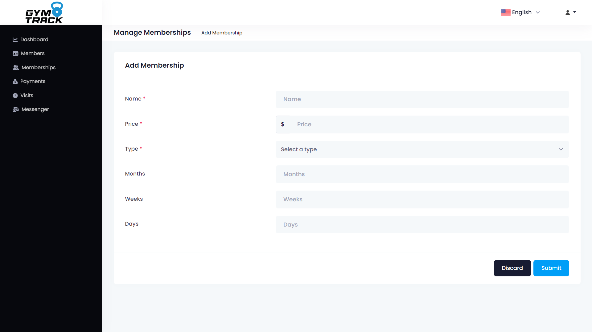
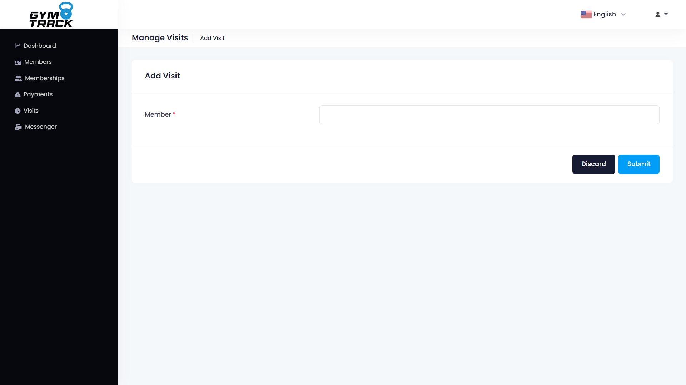
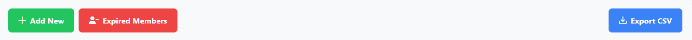

INICIO
Bienvenido al archivo de ayuda para la instalación y configuración de la aplicación web
GymTrack.
Introducción:
GymTrack es una aplicación web con la arquitectura Multi-Tenant enfocada para SAAS, la cual
permite a los usuarios administrar sus gimnasios, así como también permite a los usuarios
administrar sus membresías, clientes, visitas, pagos y más.
Requisitos del sistema:
Antes de comenzar con la instalación, asegúrate de que tu sistema cumpla con los siguientes
requisitos:
Navegador web:
Se recomienda utilizar la última versión de Google Chrome, Mozilla Firefox o Safari para
obtener la mejor experiencia de usuario.
Sistema operativo:
GymTrack es compatible con todos los sistemas operativos, ya sea Windows, Linux o Mac.
Instalación:
Sigue los pasos a continuación para instalar GymTrack en tu sistema: Presiona aquí
INSTALACIÓN
Base de datos
Primeramente se debe instalar PostgreSQL, para ello se debe descargar el instalador desde la
página oficial de PostgreSQL https://www.postgresql.org/download/ y
seguir los pasos de instalación.
Posteriormente a su instalación de PostgreSQL, ejecutaremos pgAdmin, el cual es el gestor
de base de datos para PostgreSQL, en el cual crearemos una base de datos con el nombre que
nosotros queramos, en este caso se llamará "gymtrack".
El usuario que se utilizará para la conexión a la base de datos será "postgres" o el
usuario que se haya creado en la instalación de PostgreSQL y lo mismo con la contraseña.
BackEnd (Servidor)
Ahora continuaremos con la instalación del servidor, para ello se debe descargar el
instalador desde la página oficial de NodeJS https://nodejs.org/es/download/ y seguir los
pasos de instalación.
Después de que se haya instalado NodeJS, se debe abrir una terminal y ejecutar el siguiente
comando:
npm install
Después de que se haya instalado las dependencias, optaremos por abrir el archivo
".env.example" y cambiar el nombre a
".env", en el cual lo abriremos y cambiaremos
los datos de conexión a la base de datos, los cuales son los siguientes los más primordiales (ya
que hay más variables que se pueden cambiar, más sin embargo estas son las que realizan la
conexión a la base de datos):
-
DB_HOST =
YOUR_HOST
-
DB_USER =
YOUR_USER
-
DB_PASS =
YOUR_PASS
-
DB_DATABASE =
YOUR_DATABASE
A continuación, esto incluye el archivo
".env.example":
PORT=8080
HOST_URL=http://localhost:8080/
APP_TITLE=
#postgresql database config - Required
DB_HOST=
DB_USER=
DB_PASS=
DB_DATABASE=
#Sendgrid details for sending email - Optional
SENDGRID_API_KEY=
SENDGRID_SENDER=
#Google details for google login - Optional
GOOGLE_CLIENT_ID=
GOOGLE_CLIENT_SECRET=
#Twilio details for phone OTP login - Optional
TWILIO_ACCOUNT_SID=
TWILIO_AUTH_TOKEN=
TWILIO_SENDER=
#Optional
ACCESS_TOKEN_SECRET=
REFRESH_TOKEN_SECRET=
Si queremos que el servidor envíe correos electrónicos, se debe crear una cuenta en https://sendgrid.com/ y obtener una API KEY, la cual se
debe colocar en el archivo ".env" en la variable "SENDGRID_API_KEY".
Para poder enviar correos electrónicos, se debe crear un sender, el cual se debe colocar en
la variable "SENDGRID_SENDER".
Los demás datos solicitados en las variables no son necesarias ya que aún algunas funciones
no están implementadas o se encuentrán en proceso de desarrollo.
Por último, ya que hayamos configurado el archivo ".env", procederemos a ejecutar el
siguiente comando en la terminal:
npm start
Esto iniciará el servidor y se podrá acceder a la siguiente dirección:
http://localhost:8080/
FrontEnd (Cliente)
Para que podamos visualizar el cliente, se debe instalar Angular, para ello se debe
descargar el instalador desde la página oficial de Angular https://angular.io/guide/setup-local y
seguir los pasos de instalación.
Después de que se haya instalado Angular, se debe abrir una terminal y ejecutar el siguiente
comando:
npm install
Después de que se haya instalado las dependencias, optaremos por abrir el archivo
"src/environments/environment.ts" y cambiar los datos de conexión al servidor, los cuales
son los siguientes:
export const environment = {
baseUrl: 'http://localhost:4200',
production: true,
url: "http://localhost:8080/"
};
En caso de que se haya cambiado el puerto del servidor, se debe cambiar el puerto en la variable
"url" del archivo
"src/environments/environment.ts".
* Nota: En la carpeta de environments, hay dos archivos, uno
es para producción y el otro es para desarrollo, en este caso se está demostrando el de
producción.
Por último, ya que hayamos configurado el archivo "src/environments/environment.ts",
procederemos a ejecutar el siguiente comando en la terminal:
npm start
Esto iniciará el cliente y se podrá acceder a la página web en la siguiente dirección:
http://localhost:4200/
* Nota: En caso de que se haya cambiado el puerto del servidor,
se debe cambiar el puerto en la variable
"url" del archivo
"src/environments/environment.ts".
¡Felicitaciones 🥳! Ya se ha configurado el servidor y el cliente, ahora se puede acceder
a
la aplicación web y disfrutar de sus funciones.
¿CÓMO USAR?
Ahora continuaremos con los pasos para poder utilizar la aplicación web, para ello se debe de
acceder a la página web, en este caso se accederá a la siguiente dirección: http://localhost:4200/ que pertenece al cliente
(o la dirección de nuestro servidor en caso de que se haya cambiado).
Una vez que se haya accedido a la página web, se mostrará la siguiente pantalla:

En esta pantalla se muestra el "Inicio de sesión", en el cual se debe ingresar el correo y contraseña de la cuenta creada
por default en la base de datos, la cual es la siguiente:
Correo electrónico:
admin@admin.com
Contraseña:
admin123
Una vez que se haya ingresado el correo y contraseña, se debe presionar el botón de "Continuar", el cual nos
dirigirá a la siguiente pantalla:

En esta pantalla se muestra el "Dashboard", en el cual se muestra un resumen de los datos más importantes de la
aplicación web, así como también se muestra un gráfico de barras con los ingresos por mes y un gráfico de pastel con
comparativa de los gimnasios y propietarios registrados.
En la parte superior derecha se muestra el icono de una persona que hace referencia al usuario que ha iniciado sesión,
al abrir este dropdown se muestran las opciones de "Profile", "Change Password" y "Logout".
Ahora continuaremos con la explicación de cada una de las opciones del menú lateral izquierdo:
Dashboard:
En este módulo se muestra un resumen de los datos más importantes de la aplicación web, así como también se muestra un
gráfico de barras con los ingresos por mes y un gráfico de pastel con comparativa de los gimnasios y propietarios
registrados.
Licencias:
En este módulo se muestran las licencias de los gimnasios, en el cual se puede crear, editar y eliminar las licencias de
los gimnasios.
Owners:
En este módulo se muestran los propietarios de los gimnasios, en el cual se puede crear, editar y eliminar los propietarios
de los gimnasios.
Gyms:
En este módulo se muestran los gimnasios, en el cual se puede crear, editar y eliminar los gimnasios.
Users:
En este módulo se muestran los usuarios, en el cual se puede crear, editar y eliminar los usuarios en donde aquí mismo se
asigna el rol del usuario y al mismo tiempo se asigna el gimnasio al que pertenece.
Members:
En este módulo se muestran los miembros, en el cual se puede crear, editar y eliminar los miembros en donde aquí mismo se
asigna el gimnasio al que pertenece (pedirá asignar el gimnasio al que pertenece si el usuario es SUPERADMIN, ya que si es
ADMIN (Owner), se asignará automáticamente el gimnasio al que pertenece el usuario detectando a que gimnasio pertenece el usuario
que ha iniciado sesión).
Memberships:
En este módulo se muestran las membresías, en el cual se puede crear, editar y eliminar las membresías en donde aquí mismo se
asigna el gimnasio al que pertenece (pedirá asignar el gimnasio al que pertenece si el usuario es SUPERADMIN, ya que si es
ADMIN (Owner), se asignará automáticamente el gimnasio al que pertenece el usuario detectando a que gimnasio pertenece el usuario
que ha iniciado sesión).
Payments:
En este módulo se muestran los pagos, en el cual se puede crear, editar y eliminar los pagos en donde aquí mismo se
asigna el gimnasio al que pertenece (pedirá asignar el gimnasio al que pertenece si el usuario es SUPERADMIN, ya que si es
ADMIN (Owner), se asignará automáticamente el gimnasio al que pertenece el usuario detectando a que gimnasio pertenece el usuario
que ha iniciado sesión). También se puede filtrar por membresía y por miembro, este módulo es el más importante ya que aquí se
registran los pagos de los miembros de los gimnasios.
Visits:
En este módulo se muestran las visitas, en el cual se puede crear y eliminar las visitas, para eliminar visitas solamente lo puede
hacer el usuario SUPERADMIN y ADMIN (Owner) ya que tienen permisos para esta acción, mientras tanto los usuarios Staff no pueden
eliminar visitas. También se puede filtrar por gimnasio, por miembro y por fecha, este módulo es el más importante ya que aquí se
registran las visitas de los miembros de los gimnasios y se puede filtrar por fecha para saber cuantas visitas se han registrado en
un día en específico.
Messenger:
En este módulo podemos enviar mensajes a los miembros de los gimnasios, usuarios del sistema (esto solamente para
usuarios SUPERADMIN), también a un correo electrónico en específico, en donde se puede enviar un mensaje desde el sistema
para que el miembro o la persona pueda verlo en su correo electrónico. Sin necesidad nosotros de enviar un correo electrónico
desde nuestro correo electrónico personal.
Settings:
En este módulo solo es visualizado por el usuario SUPERADMIN, en donde muestra las configuraciones del sistema, en donde se
puede cambiar el nombre del sistema, el color del tema del sistema, información de la empresa, información de contacto y otras
configuraciones más.
Ahora los pasos para empezar a interactuar con la aplicación web:
1. Crear un propietario de un gimnasio.
2. Crear un gimnasio.
3. Crear un usuario y asignarle el rol de ADMIN (Owner) y asignarle el gimnasio al que pertenece.
4. Ir a la opción de "Licencias" y en el Toolbar presionar el botón de "Tipo de licencia" y aquí dentro presionaremos "Add New"
para crear un tipo de licencia por ejemplo "Monthly" y presionar el botón de "Submit".
5. Ir a la opción de "Licencias" y en el Toolbar presionar el botón "Add New" para crear una licencia, en donde se debe seleccionar
el gimnasio al que pertenece y el tipo de licencia. Posteriormente nos arrojará el precio de la licencia a cobrar. Al guardarlo se
creará la licencia.
6. A partir de haber creado la licencia, automáticamente (si está configurado SENDGRID en el archivo .env) se enviará un correo
electrónico al gimnasio con la información de la licencia creada donde le comparte la clave de la licencia para que pueda ser utilizada.
En caso de que no se haya configurado SENDGRID en el archivo .env, en el listado de licencias se puede ver la clave de la licencia creada
presionando al botón de "View" en la licencia creada.
7. Para este punto el gimnasio al que le hemos creado la licencia, puede acceder a la aplicación web. Al ingresar a la aplicación web
le solicitará automáticamente la clave de la licencia, la cual se debe ingresar para poder acceder a empezar a interactuar con la aplicación.
8. Una vez que el gimnasio haya ingresado la clave de la licencia y esta sea válida, se le mostrará una alerta de que la licencia ha sido
activada y se le redireccionará al "Dashboard" en donde podrá empezar a interactuar con la aplicación web. Después de pasar esto en el "Dashboard"
le aparecerá su fecha de expiración de la licencia. También se le envía un correo electrónico al gimnasio con la información de la licencia activada donde
le comparte la fecha de expiración de la licencia y otros datos más.
9. Ahora el gimnasio puede empezar a crear miembros, membresías, pagos, visitas y más.
10. Para este punto nuestro gimnasio ya puede operar de manera normal, ahora continuaremos con la explicación de los módulos más importantes
de la aplicación web.
Members:
En este módulo se muestran los miembros, en el cual se puede crear, editar y eliminar. A la hora de dar de alta un miembro, nos aparece el
siguiente formulario:

En este formulario se debe ingresar los datos del miembro (casi todos los campos son obligatorios), ya que son datos relevantes para el miembro y para el gimnasio.
Un punto muy importante es que si nosotros queremos que el miembro pueda registrar su visita mediante tarjeta RFID (tarjeta de proximidad), debemos presionar el botón
"Enable RFID" para que se habilite el campo de "RFID Card" y así poder ingresar el número de la tarjeta RFID del miembro. En caso de que no se quiera que el miembro
pueda registrar su visita mediante tarjeta RFID, se debe dejar deshabilitado el botón de "Enable RFID" y al mandar a guardar el miembro, automáticamente generará una
clave de acceso para el miembro y se le generará automáticamente un código QR para que el miembro pueda registrar su visita mediante el código QR.
Memberships:
En este módulo se muestran las membresías, en el cual se puede crear, editar y eliminar. A la hora de dar de alta una membresía, nos aparece el
siguiente formulario:

En este formulario se debe ingresar los datos de la membresía (todos los campos son obligatorios), ya que son datos relevantes para la membresía y para el gimnasio.
Nos solicita los datos como el nombre de la membresía, el precio de la membresía y el tipo de membresía. El tipo de membresía es muy importante ya que aquí se
va habilitar el input dependiendo del tipo de membresía que se haya seleccionado, por ejemplo si seleccionamos el tipo de membresía "Monthly", se habilitará el
input de "Months" en donde se debe ingresar el número de meses que durará la membresía, en caso de que se seleccione el tipo de membresía "Weekly", se habilitará
el input de "Weeks" en donde se debe ingresar el número de semanas que durará la membresía y así sucesivamente con el tipo de membresía "Daily".
Payments:
En este módulo se muestran los pagos, en el cual se puede crear y eliminar solamente (ya que no se puede editar un pago). A la hora de dar de alta un pago, nos aparece el
siguiente formulario:

En este formulario se debe ingresar los datos del pago (todos los campos son obligatorios), ya que son datos relevantes para el pago y para el gimnasio.
Nos solicita los datos como el miembro al que se le está realizando el pago y la membresía que se le está asignando al miembro. Al seleccionar la membresía nos arrojará
el precio de la membresía a cobrar después de haber seleccionado al miembro y la membresía. También nos solicita la fecha de inicio de la membresía para que al registrar el pago
pueda calcular la fecha de expiración de la membresía. Una vez se haya registrado el pago, se le enviará un correo electrónico al miembro con la información del pago realizado.
Posteriormente a esto nos aparecerá una alerta de que el pago se ha registrado correctamente y podremos visualizarlo en la lista de pagos. En caso de que el miembro este solicitando
un "Ticket de pago físico" podemos generarlo para impresión presionando el botón de "Ticket" en el listado de pagos.
Visits:
En este módulo se muestran las visitas, en el cual se puede crear y eliminar solamente (ya que no se puede editar una visita). A la hora de dar de alta una visita, nos aparece el
siguiente formulario:

En este formulario se debe ingresar solamente un campo que es el miembro al que se le está registrando la visita, ya que es un dato relevante para la visita y para el gimnasio.
Nos estará solicitando el miembro al que se le está registrando la visita, pero no podemos buscarlo por nombre ni por apellido, solamente podemos buscarlo por su clave de acceso y para esto
solamente tenemos que escanear el código QR o la tarjeta RFID del miembro y automáticamente registrará la visita detectando la clave de acceso del miembro. En caso de que el miembro no tenga
una membresía activa, no exista o no tenga una clave de acceso válida no podrá registrar la visita y arrojará una alerta mencionando el problema que se ha detectado.
Messenger:
En este módulo podemos enviar mensajes a los miembros del gimnasio o a un correo electrónico en específico, en donde se puede enviar un mensaje desde el sistema
para que el miembro o la persona pueda verlo en su correo electrónico. Sin necesidad nosotros de enviar un correo electrónico desde nuestro correo electrónico personal.

Todas las tablas o listados del sistema cuentan con un buscador, en donde se puede buscar algún dato que contenga la tabla. También se puede ordenar por orden ascendente o descendente. También cuenta
con la opción en el "Toolbar" de exportar el contenido en formato CSV.

El módulo de licencias y miembros cuentan con un módulo interno de "Expired" donde se puede visualizar las licencias vencidas y los miembros que no tienen una membresía activa que fueron
registrados en el sistema en "Expired Members" y "Expired Licenses" respectivamente.
Finalmente para este punto ya se puede utilizar la aplicación web de manera normal, en caso de que se requiera más información o ayuda, se puede poner en contacto conmigo a través de mi correo electrónico.
SOPORTE
Si desea obtener soporte adicional o tiene alguna pregunta, no dude en ponerse en contacto
conmigo a través de mi correo electrónico thomasorozcog@gmail.com
Recuerde que este es un archivo de ayuda para la instalación y configuración de la
aplicación web, si desea obtener ayuda adicional, puede ponerse en contacto conmigo a través
de mi correo electrónico.
Si usted requiere un módulo, o algo adicional a la aplicación web, puede ponerse en contacto
conmigo a través de mi correo electrónico y con gusto le cotizaré el módulo o la función que
usted requiera.
También puedo instalar la aplicación web en un servidor, en caso de que usted no sepa como
hacerlo, puede ponerse en contacto conmigo a través de mi correo electrónico y con gusto le
cotizaré la instalación de la aplicación web en un servidor.
¡Gracias por su compra!